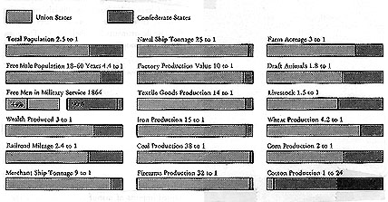
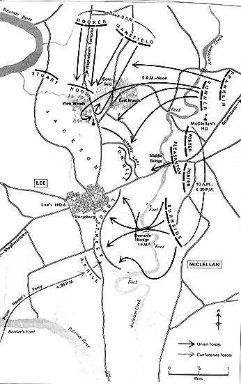
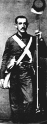
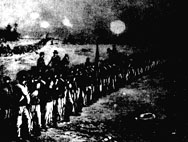
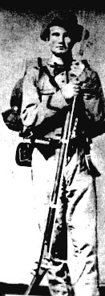

Herman Melville, "Malvern Hill," a poem written to commemorate Malvern Hill, the last battle of the Seven Days' Battles, fought on July 1, 1862
Ye elms that wave on Malvern Hill
In prime of morn and May,
Recap ye how McClellan's men
Here stood at bay?
While deep within yon forest dim
Our rigid comrades lay
Some with the cartridge in their mouth,
Others with fixed arms Iifted South-
lnvoking so
the cypress glades? Ah wilds of woe!
The spires of Richmond, late behold
Through rifts in musket-haze
Were closed from view in clouds of dust
on leaf-walled ways,
Where streamed our wagons in caravan;
And the Seven Nights and Days
Of march and fast, retreat and fight,
Pinched out grimed faces to ghastly plight-
Does the elm wood
Recall the haggard beards of blood?
The Battle-smoke flag, with stars eclipsed,
We followed (it never fell)
In silence husbanded our strength-
Received their yell;
Till on this slope we patient turned
With cannon ordered well;
Reverse we proved was not defeat,
But ah, the sod what thousands met!
Does Malvern wood
Bethink itself, and muse and brood?
We elms of Malvern Hill
Remember every thing;
But sap the twig will fill:
Wag the world how it will,
Leaves must be green in Spring.
The Vacant Chair, words by H.S. Washburn; music by George F. Root
Written in 1861, about Thanksgiving time, the theme of the "vacant
chair" was a familiar one in Northern and Southern homes. The song commemorates the
death of Lt. John William Grout, Massachusetts Infantry, who was killed at Ball's
Bluff in October 1861.
When one year ago we gathered,
Chorus: We shall meet, etc.
At our fireside, sad and lonely
How he strove to bear our banner
Chorus: We shall meet, etc.
True they tell us wreaths of glory
Sleep today O' early fallen
Chorus: We shall meet, etc.
In the end it would become an army of legend, with a great name that still clangs
when you touch it. The orations, the brass bands and the faded flags of innumerable
Decoration Day observances, wiling for it in the years ahead, would at last create
a haze of romance, deepening spring by spring until the regiments and brigades became
unreal-colored-lithograph figures out of a picturebook war, with dignified graybeards
bemused by their own fogged memories of a great day when all the world was young
and all the comrades were valiant.
But the end of August in the year 1862 was not the time for taking a distant and
romantic view of things. The Army of the Potomac was not at that moment conscious of
the formation of legends; it was hungry and tired, muddy and ragged, sullen with the
knowledge that it had been shamefully misused, and if it thought of the future at all
it was only to consider the evil chances which might come forth during the next
twenty-four hours. It was in a mood to judge the future by the past, and the
immediate past had been bad. The drunken generals who had botched up supply lines,
the sober generals who had argued instead of getting reinforcements forward, the
incredible civilians who had gone streaming out to a battlefield as to a holiday
brawl, the incompetents who thought they were winning when they were losing were
symbols of a betrayal that was paid for in suffering and humiliation by the men who
were discovering that they had enlisted to pay just such a price for other men's
errors.
...McClellan is an intelligent engineer but not a commander. To attack or advance
with energy and power is not in his reading or studies, nor is it in his nature or
disposition to advance...He likes show, parade and power. Wishes to outgeneral
the Rebels, but not to kill and destroy them.
We had marched ten rods, when whiz-z-z! bang! burst a shell over our heads; then
another, then a percussion shell struck and exploded in the very center of the
moving mass of men. It killed two men and wounded eleven. It tore off Captain David
K Noyes's foot, and cut off both arms of a man in his company. This dreadful scene
occurred within a few feet of where I was riding, and before my eyes. The column
pushed on without a halt and in another moment had the shelter of a barn. Thus
opened the first firing of the great battle of Antietam, in the early morning of
September 17th, 1862. The regiment continued moving forward into a strip of woods,
where the column was deployed into line of battle. The artillery fire had now
increased to the roar of a hundred cannon. Solid shot and shells whistled though
the trees above us, cutting off limbs which fell about us. In front of the woods
was an open field; beyond this was a house, surrounded by peach and apple trees, a
garden, and outhouses. The rebel skirmishers were in this cover, and they directed
upon us a vigorous fire. But company I deployed as skirmishers, under command of
Captain John A. Kellogg, dashed across the field at a full run and drove them out,
and the line of the regiment pushed on over the green open field, the air above
our heads filled with the screaming missiles of the contending batteries.
When Beauregard called off the fight at sundown he had every reason to think the next
day would be spent picking up the spoils of battle. He had Grant's army pushed back
within shooting distance of the river and he had received a dispatch telling him
that Buell's army had reversed its route of march and was moving toward Decatur. But
now Forrest had seen with his own eyes how wrong the dispatch was, for a quarter of
an hour we watched the reinforcements coming ashore, the thick blue cannons marching
up the bluff. Then the gunboats fired again, both shells screaming past with their
breath in our hair...
When the battle opened Sunday morning, we were posted with the 1st Tennessee Infantry
on the south side of Lick Creek, guarding the fords. From sunup until almost noon we
stayed there, hearing the guns roaring and the men cheering as they charged through
camp after camp. About midmorning the infantry crossed over, marching toward the
firing, but we stayed there under orders, patrolling the creek with no sign of a
bluecoat in sight and the battle racket getting fainter. Finally the colonel had
enough of that. So he assembled the regiment and gave us a speech He stood in the
stirrups and addressed us. "Boys, you hear that musketry and that artillery?" "Yair!
Yair!" It came in a roar."Do you know what it means!" But he wasn't asking, he was
telling us. It means our friends are fading by the hundreds at the hand of the enemy.
And here we are, guarding a damned crick! We didn't enter the service for such work
while we're needed elsewhere; Let's go help them! What do you say?" It came in a roar:
"Yair! Yair!"

7:00 a.m.: Hood's Confederates counterattack and Stop I Corps' advance at
the Miller cornfield
7:30 a.m. to 9:00 a.m.: Mansfield's XII Corps attacks to the Dunker
Church but fresh Confederate reinforcements drive them back
10:00 a.m.: Sedgwick's division of Sumner's II Corps attacks into the West
Woods but is flanked and repulsed with heavy losses
1:00 p.m.: Richardson's and French's divisions of Sumner's II corps capture
Bloody Lane and broach Lee's center
10:00 a.m. to 1:00 p.m.: Burnside's IX Corps seize the bridge across
Antietam after repeated attempts to cross
1:00 p.m.: Rodman's division of IX Corps wades through Snavely's Ford and
flanks Toombs' Confederates above the bridge
3:00 p.m.: Burnside launches a general assault, pushing Longstreet's
Confederates back to the outskirts of Sharpsburg
4:00 p.m.: A.P. Hill's Confederate division arrives from Harper's Ferry
just in time to cripple Burnside's advance with a counterattack against the Union
left flank   
We shall meet, but we shall miss him
There will be one vacant chair;
We shall linger to caress him
While We breathe our ev'ning prayer.
Joy was in his mild blue eye,
Now the golden cord is severed,
And our hopes in ruin lie.
Often will the bosom swell
At remembrance of the story
How our noble Willie fell;
Thro' the thickest of the fight,
And uphold our country's honor
In the strength of manhood's might.
Evermore will deck his brow,
But this soothes the anguish only
Sweeping o'er out heartstrings now.
In thy green and narrow bed,
Dirges from the pine and cypress
Mingle with the tears we shed.
Bruce Catton, The Army of the Potomac Trilogy
Gideon Welles, Secretary of the Navy, U.S., on George B. McClellan
Rufus R. Dawes, on the Fighting in Miller's Cornfield at Antietam
(Dawes was with the 6th Wisconsin in the charge and countercharge
through the Miller cornfield at Antietam)
Shelby Foote, Shiloh, a novel
(From the account of Sergeant Jefferson Polly Scout, Col. Nathan
Bedford Forrest's Cavalry)
6:00 a.m.: Hooker's Federal I Corps begins the attack but his
left bogs down under artillery fire from Nicodemus Hill
- General George McClellan to General Henry Halleck, September
17, 1862
The rebels are wretchedly clad...The cavalry men are mostly barefooted, and the
feet of the infantry are bound up in rags and pieces of rawhide.
- A resident of Harper's Ferry observing the arrival of Jackson's
army shortly before the battle of Antietam
To see thousands lying upon the field, some dead and others wounded, and to hear
the cries of the wounded for help...some with an arm, leg, and even their nose or
under jaw shot off, oh it is revolting to humanity...oh, my god can't this cruel
strife be brought to an end
- Lieutenant Thomas Taylor to his wife in Richmond